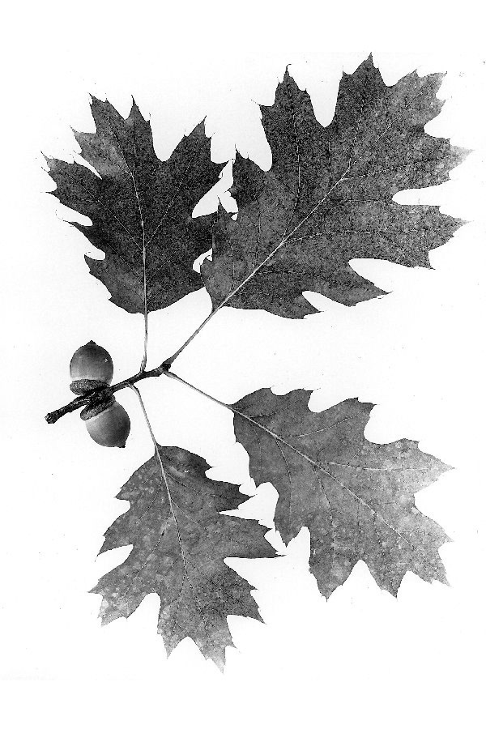
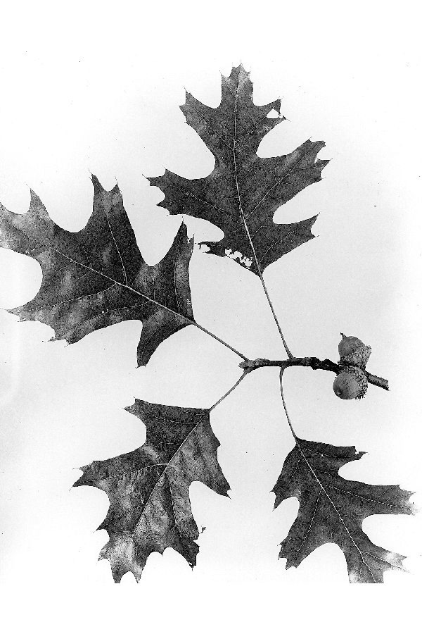
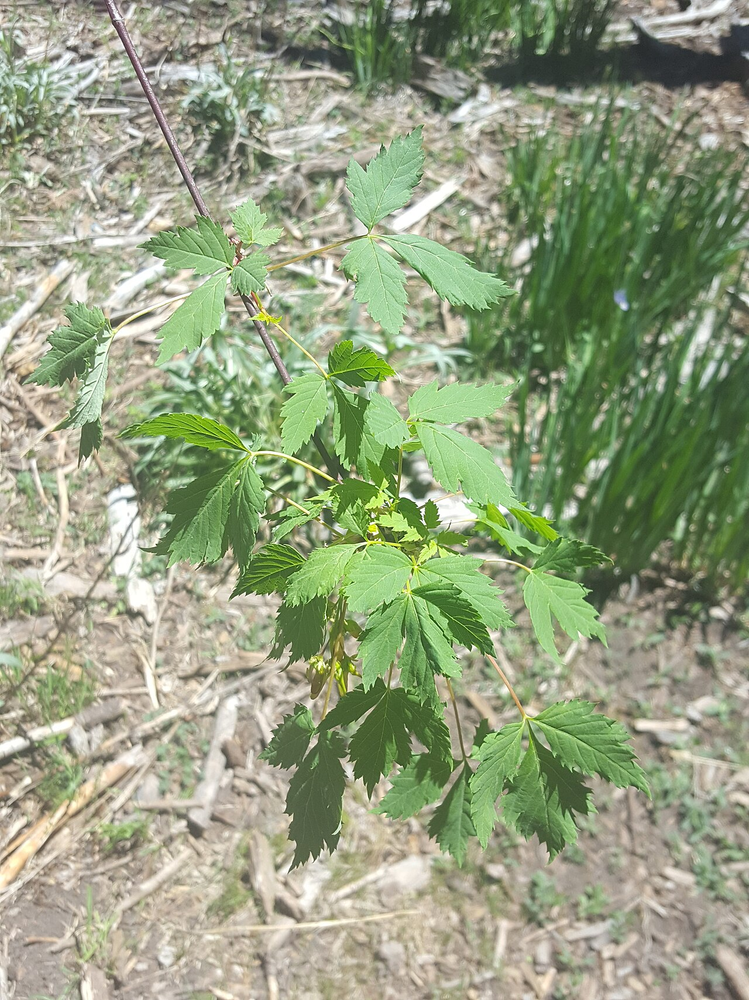
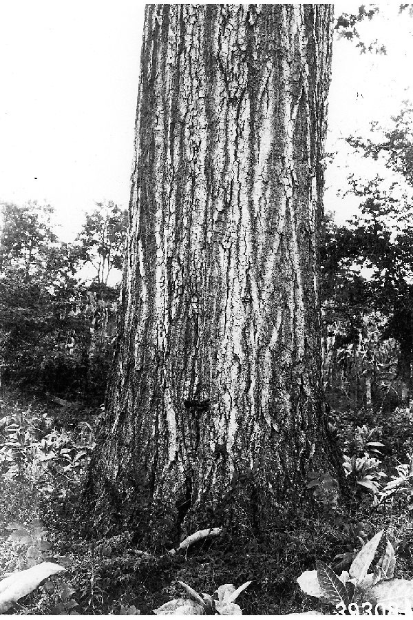

Pressed specimen, undetermined. W. D. Brush.
Name this tree.

Red oak leaves have 7 to 11 bristle-tipped lobes with shallow sinuses; black oak lobes cut deeper and the leaf is glossier.
Trees of the Colorado Front Range.
Unit 5, six new cards.
Black oak, one of the six.
Your forty cards, pressed on one sheet. The pale outlines are the twelve you have not met.

Quercus rubra
Native. Section Lobatae, the red oaks.
Leaf and fruit. W. D. Brush, public domain.
Eastern North America. In Colorado it grows as a planted street and park tree in Front Range towns; in its own range it holds mesic upland forests and well-drained slopes.

W. R. Mattoon, public domain.
No fruit plate is collected yet.
No varieties are recognized for this species.